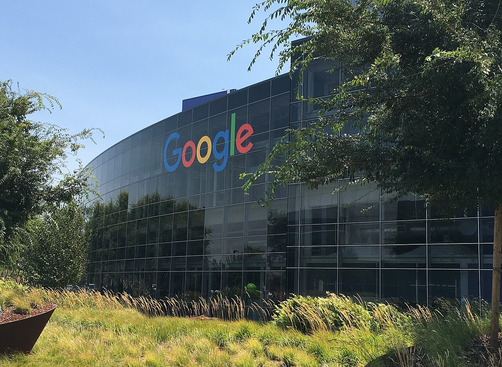
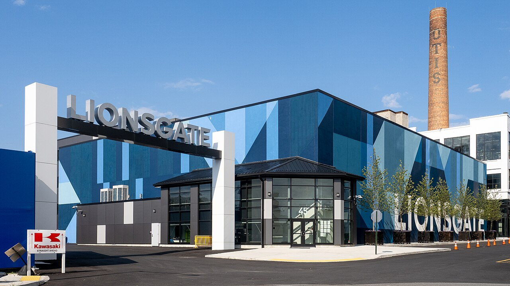

Vol. I · No. 60 · Friday, July 17, 2026 · 12 items · 6 sections · ~13 min read
China’s Moonshot ships the largest open model the world has seen and it already tops a coding leaderboard; Iran tells the Houthis to ready a second oil choke point; a judge waves Paramount’s Warner deal past its first block; and BigLaw is forty-four days into waiting on Cravath to name a number.
The Splash · Artificial intelligence · Beijing
China’s Moonshot ships the largest open model ever built, and it already leads a coding leaderboard
Beijing’s central business district. Moonshot AI, one of China’s best-funded model labs, released Kimi K3 on Thursday. — Wikimedia Commons
Moonshot AIInstitutionA Beijing model lab backed by Alibaba, reported near a $20 billion valuation with revenue said to top $200 million a year; maker of the Kimi model family. released Kimi K3 on Thursday, a roughly 2.8-trillion-parameter mixture-of-expertsConceptAn architecture that routes each token to a subset of specialized “expert” sub-networks, letting total parameters balloon without proportional compute per query. model with a one-million-token context window and a new “Kimi Delta Attention.” Moonshot is calling it the first open three-trillion-class model, rounding up from 2.8 trillion and taking the crown from DeepSeek. Two variants shipped at once: K3 Max for chat and agent work, and K3 Swarm Max for large parallel jobs.
The claim is not just size. Simon Willison, an engineer not given to hype, called K3 the leading model on Arena.ai’s Frontend Code arena on launch day, ahead of every closed system he tested. The company priced the API at $3 per million input tokens and $15 per million output, the level of Anthropic’s Claude Sonnet and the most a Chinese lab has ever charged, yet still a fraction of the newest American flagship’s rate. The open weightsConceptA model whose trained parameters are publicly downloadable and self-hostable, distinct from open source, since the training data and code can stay closed. are promised by July 27 under a modified MIT license.
The timing is the story. A frontier modelConceptThe largest, most capable general-purpose models at the leading edge of AI, the tier that draws the heaviest regulatory and capital-markets attention. that anyone with the hardware can run lands the same week bankers began lining up Anthropic’s autumn IPO at a near-trillion-dollar valuation. When the weights ship on the 27th, the gap between the closed frontier and a free download becomes something any team can exploit, and the price floor for frontier-grade AI drops toward the cost of the servers.
“The leading model on Arena.ai’s Frontend Code arena, surpassing even Claude Fable 5.”
— Simon Willison, July 16
Why it mattersIf an open Chinese model can top a Western coding leaderboard and then be downloaded for free, the moat that justifies a trillion-dollar private valuation starts to look like a lease, exactly the disclosure and durability question a lawyer or banker takes into an AI-lab IPO.
The Front · The world · Tehran · cross-spectrum LLCR
Iran tells the Houthis to be ready to close the Red Sea gateway, opening a second oil choke point
Iran has asked the HouthisInstitutionThe Iran-aligned Yemeni movement (Ansar Allah) that controls Sanaa and the port of Hodeidah and disrupted Red Sea shipping with missiles and drones in 2023 and 2024. to stand ready to close the Bab el-Mandeb StraitPlaceThe twenty-mile choke point linking the Gulf of Aden to the Red Sea and the Suez Canal; roughly 7% of global seaborne energy passes through it. if the United States strikes Iran’s power grid, three sources told Reuters on Thursday. A person close to the group said preparations are complete, with missiles and drones positioned near the strait and Revolutionary GuardInstitutionThe Islamic Revolutionary Guard Corps (IRGC), Iran’s elite military branch, which runs its missile and drone forces and directs regional proxies like the Houthis. officers in Yemen holding the decision to fire.
The threat opens a second front on the world’s energy map. With the Strait of Hormuz already locked in a blockade standoff, a Red Sea closure would put both of the Middle East’s principal export routes at risk at once. The Houthis’ earlier campaign forced shippers to reroute around Africa without ever fully sealing the strait; even the readiness order re-prices tanker and marine-insurance risk.
Framing noteThe wires (Al-Monitor) run it straight as a credible, market-moving threat to global energy; the right (Fox) frames it as terror-actor aggression and asks whether the group can actually pull it off.
Why it mattersA second choke point in play means the oil-risk premium stops being about one strait, and the gap between an Iranian “we’re ready” and a US grid strike is where a contained war could tip into a global energy shock.
A judge waves Paramount’s $110B Warner deal past its first legal block, with a state showdown due Friday
US District Judge Araceli Martínez-OlguínPersonA Biden-appointed federal judge in the Northern District of California hearing the challenges to the Paramount–Warner Bros. Discovery merger. on Thursday denied a preliminary injunctionConceptA pre-trial order halting conduct; the movant must show both a likelihood of success on the merits and irreparable harm. sought by five pay-TV and streaming subscribers to block the roughly $110 billion Paramount–Warner Bros. Discovery merger. The consumers, who sued in April, failed to show either a strong probability of winning or harm that could not be undone later, the court found.
The reprieve is partial. The same judge takes up a separate motion for a temporary restraining orderConceptA short-term emergency order preserving the status quo, often decided before a fuller preliminary-injunction hearing. Friday from a coalition of twelve state attorneys general suing on parens patriaeConceptThe doctrine letting a state sue on behalf of its residents’ collective interests, the basis for state antitrust standing. antitrust grounds; the states want a ruling by July 22 and warn the deal could otherwise close. Paramount has called their suit “one of the weakest merger challenges in modern antitrust history.”
Why it mattersThis is the live test of whether state AGs can stop a federally cleared media megadeal at the courthouse door, the procedural chess a capital-markets or antitrust associate plays when a signed deal still has to survive litigation to close.
Capability, the labs, and the law racing to catch them.
Artificial intelligence · Mountain View
Google’s flagship Gemini slips a third time as the rebuilt model falls short of its own bar

The Googleplex in Mountain View. DeepMind has registered stopgap “Flash” names while the flagship Pro model slips. — Wikimedia Commons
Google’s Gemini 3.5 Pro has been delayed again because the technology “falls short of internal goals,” Bloomberg reported Thursday. The model still hallucinates and gives inconsistent outputs, and has failed to match OpenAI’s GPT-5.6 on key benchmarks, notably coding, after Google DeepMindInstitutionGoogle’s consolidated AI division, led by Demis Hassabis, that develops the Gemini model family. scrapped the earlier base and did a ground-up pre-trainingConceptThe compute-heavy first phase of building a model, where it learns general capabilities from a vast corpus before task-specific tuning. rebuild.
It is the third consecutive miss after targets in June and mid-July. DeepMind has quietly registered the names “Gemini 3.6 Flash” and “Gemini 3.5 Flash Light,” signaling smaller stopgap releases to hold the line while the flagship frontier modelConceptThe largest, most capable general-purpose model a lab fields; the tier where Google is now visibly trailing OpenAI and Anthropic. slips. Engineers inside Google are reported to worry the company is losing its edge as rivals ship systems that beat Gemini.
Why it mattersThe same week an open Chinese model reaches the frontier, the company with the deepest research bench cannot force its flagship to work, a reminder that scale and money do not guarantee capability, and that the AI pecking order markets price on is not fixed.
Capital markets, the deal calendar, and the money behind the money.
Markets & deals · Los Gatos
Netflix beats on earnings, then guides Q3 below the Street, and the stock drops 8%
The Nasdaq MarketSite. Netflix reported after Thursday’s close, and shares fell more than 8% on the guidance. — Wikimedia Commons
Netflix posted second-quarter revenue of $12.56 billion, up 13% and just shy of the $12.59 billion consensus, with earnings of 80 cents a share against a 79-cent estimate and net income of $3.40 billion, up from $3.13 billion a year earlier. Operating marginConceptOperating income as a share of revenue, here 33.4%; a core read on profitability for capital-markets analysts. ran to 33.4%, and the company narrowed full-year revenue to a $51.0-to-$51.4 billion range.
The reaction was all about the outlook. Netflix guided third-quarter revenue to roughly $12.86 billion, below the near-$13 billion the Street wanted, and the stock fell more than 8% after hours despite the beat, a textbook case of a market moving on forward guidanceConceptA company’s own forecast of coming revenue and margins; markets often move more on the guide than on the reported quarter, as here. rather than the print. Netflix also said it will publish its “What We WatchedConceptNetflix’s engagement report detailing viewing hours by title; the company is cutting it from twice to once a year starting in 2027.” engagement report only once a year from 2027, having logged 97 billion-plus viewing hours in the first half.
Why it mattersNetflix is the sector’s bellwether, and a beat-and-drop plus a pullback in disclosure is the read on how a maturing streamer gets valued, and how much daylight it wants to give the market, just as Paramount and Warner fight to combine.
A Miami startup doubles its round to $10M for 3D-printed “living seawalls,” Cuban and Kuzma backing
Miami-based Kind Designs closed a $10 million pre-Series AConceptAn interim funding round before a formal Series A; “oversubscribed” means investor demand outran the target, letting the company raise more, here from a $5 million goal. on Thursday after demand reached roughly $20 million and it doubled the raise from a $5 million target, at a post-money valuation near $70 million. Returning backers Mark Cuban and former Washington mayor Adrian Fenty were joined by the NBA forward Kyle Kuzma; total funding now stands at $21.5 million.
Founder Anya FreemanPersonFounder and chief executive of Kind Designs, which 3D-prints textured “Living Seawalls” that combine shoreline protection with marine-habitat restoration. said the company booked $1 million of revenue in 2025 and now carries $10 million in contracted revenue, a $175 million pipeline, and a $2 million US Navy contract for its 3D-printed seawalls and artificial reefs. Its post-money valuationConceptA startup’s value immediately after new cash is added, the base for calculating each investor’s ownership stake. reflects a doubling of interest around coastal-resilience infrastructure.
Why it mattersEmerging-company financings are core Miami legal work, and an oversubscribed local round with celebrity capital and a federal contract is exactly the deal a Greenberg Traurig summer associate could touch, the small-market intel that carries outsized value.
The Supreme Court, the rulings that move markets, and the business of the profession.
Law & the courts · New York
Forty-four days and counting: BigLaw’s salary raises stall while the market waits on Cravath
One Manhattan West, home to Cravath, whose silence has frozen the associate pay market. — Wikimedia Commons
Forty-four days have passed since MilbankInstitutionThe New York firm that in recent years has moved first on associate pay, forcing the rest of the market to match; it opened the 2026 round on June 2. opened the 2026 associate-pay round on June 2, adding $10,000 for junior classes and $20,000 for senior ones and pushing the scale to $235,000 to $455,000, Above the Law noted Thursday. Historically CravathInstitutionCravath, Swaine & Moore, the elite firm that traditionally sets the industry-standard associate salary and bonus ladder that peers then match. sets the market within about three weeks, and its unusual silence has kept most large firms from moving.
Only a handful of top firms have matched, among them McDermott Will & Schulte, Quinn Emanuel, Katten, and Susman Godfrey, plus boutiques like Hueston Hennigan. Commentators, including David Lat, argue the “Milbank scale” may be displacing the “Cravath scaleConceptThe benchmark associate salary-and-bonus ladder, historically set by Cravath and matched firm-wide; the reference point the whole market keys to.” as the reference point, a small crack in a decades-old lockstepConceptA compensation model that pays associates strictly by seniority year rather than individual performance, keeping pay uniform across a class. pay convention.
Why it mattersAssociate pay is the clearest signal of BigLaw’s health and its bidding war for talent, and a stalled round is the number an incoming lawyer’s starting salary and every future raise are pegged to.
K&L Gates cuts about 10% of its non-lawyer staff in a “structure review”
The Am Law 50ConceptThe fifty highest-grossing US law firms by revenue, ranked annually by The American Lawyer. firm K&L Gates confirmed on Thursday that it is laying off roughly 10% of its allied professionalsConceptA firm’s non-attorney staff, from paralegals to business-services and administrative roles, increasingly the first cut as firms restructure around technology., the firm’s non-lawyer staff. Global managing partner Stacy AckermannPersonK&L Gates’s global managing partner, who framed the cuts as the outcome of a multi-month review of the firm’s structure. framed it as a “comprehensive, multi-month review of our structure to better align with how our business operates today.”
Against a headcount of roughly 3,000 to 3,400, including about 1,700 lawyers, a 10% cut implies well over a hundred jobs, and tipsters told Above the Law some offices were hit closer to 20%. The firm cited separation benefits and outplacement support. The move lands amid a wider run of BigLaw restructurings squeezing the business-services layer.
Why it mattersWhen a global firm trims support staff first while associate pay climbs, it names where the profession thinks technology is absorbing work, the operations and business-services roles rather than the billable lawyer.
Consequential developments, and how the spectrum frames them.
The world · Kyiv · LLC
Russian strikes across five cities kill at least 13, Ukraine’s deadliest day in weeks
Kyiv, struck for the second time in a week as Russia hit five Ukrainian cities overnight. — Wikimedia Commons
At least 13 people were killed in Russian strikes across Ukraine on Thursday, with the UN Human Rights Monitoring MissionInstitutionThe UN body that tracks civilian casualties in Ukraine; it called Thursday’s barrage the deadliest attack in weeks. putting the toll at 14 and calling it the deadliest attack in weeks. Ballistic missiles hit two districts of Kyiv, killing two and wounding several including a child; a guided-bomb attack on Zaporizhzhia killed three and wounded fifteen.
The Black Sea port of OdesaPlaceUkraine’s principal Black Sea port and grain-and-fuel export terminal, repeatedly targeted to choke wartime logistics. was struck, killing two and hitting fuel infrastructure, with further deaths near Kharkiv and in the Donetsk region. Russia’s defense ministry said it had targeted drone-production sites and port logistics with guided glide bombsConceptSoviet-era bombs fitted with wings and guidance kits, launched from standoff range; behind the Zaporizhzhia toll.; Ukrainian officials and the UN foregrounded the civilian dead.
Why it mattersAs American firepower swings to the Gulf, Russia is intensifying strikes on Ukraine’s cities and export lifelines, and the contest for scarce air-defense interceptors, now split between two wars, is the constraint that decides how much Kyiv can shield.
Iran’s war with the US spills onto Gulf oil sites as six Arab states issue a joint condemnation
Iranian drones caused material damage at “several vital facilities” in Kuwait on Thursday, and Saudi Arabia condemned strikes on Kuwaiti border posts and an offshore Kuwait Oil CompanyInstitutionKuwait’s state-owned oil producer; one of its offshore drilling platforms was among the sites Iran is accused of striking. drilling platform. Iran’s Revolutionary Guard claimed it hit a US missile base in Kuwait, burning two HIMARSConceptThe US High Mobility Artillery Rocket System; Iran claims to have destroyed two of the launchers at a Kuwait base. launchers and warehouses.
The Gulf Cooperation CouncilInstitutionThe six-state bloc of Saudi Arabia, the UAE, Qatar, Kuwait, Bahrain, and Oman, now increasingly on the receiving end of Iranian retaliation. states, plus Jordan, issued a fresh joint condemnation of Iran, widening a front that already spans strikes claimed on bases in Bahrain and Jordan. The wave drags six US-aligned Arab governments deeper into a war they have tried to stay clear of.
Why it mattersOnce Iranian fire lands on Gulf oil infrastructure and US-aligned states respond in chorus, the war’s risk to energy supply and sovereign-wealth exposure stops being hypothetical, and the regional coalition’s posture becomes a market variable.
Film, television, video games, music, and the business and law beneath them.
Entertainment & EASL · Santa Monica
Lionsgate, owner of John Wick and The Hunger Games, draws European takeover interest

A Lionsgate-branded studio in Yonkers. The company has engaged a bank to weigh inbound approaches. — Wikimedia Commons
Lionsgate Studios, worth about $3.8 billion and holding franchises from John Wick to The Hunger Games and Twilight, has drawn acquisition interest from the French production giants BanijayInstitutionThe French production-and-distribution group behind Big Brother and Survivor, currently absorbing its All3Media acquisition. and Mediawan, with BolloréInstitutionThe French media-and-logistics conglomerate controlled by Vincent Bolloré, also named among the parties circling Lionsgate. also named, according to Variety and Reuters. The studio has engaged an investment bank to assess the approaches, though it could stay independent.
Banijay may be constrained by its ongoing All3Media integration, while Mediawan, backed by Plan B and See-Saw, would gain theatrical-franchise scale. The shares trade at roughly 26 times expected pretax profit, a premium that complicates any bid and prices the studio largely on the recurring licensing value of its content libraryConceptA studio’s catalog of owned film and TV rights; buyers value studios largely on this recurring licensing income, not just current output..
Why it mattersA cross-border bid for a marquee franchise library is entertainment M&A at its purest, the intellectual-property valuation and structuring work at the center of the EASL practice Matthew is aiming at.
Ubisoft Barcelona wraps a weeks-long strike as the studio sheds 51 jobs
Developers at Ubisoft Barcelona concluded a strike that ran on Tuesdays and Thursdays from June 30 through July 16, with final demonstrations this week, as the studio prepares to lose 51 employees, about 28% of its pre-downsizing workforce, shortly after launching Assassin’s Creed Black Flag ResyncedConceptA remake of Ubisoft’s 2013 pirate hit built in part by the Barcelona studio, launched days before the layoffs were finalized.. Workers said the severance offered was “far below the minimum expected” and below prior Ubisoft Barcelona packages.
Their demands included a five-year ban on collective layoffsConceptUnder Spanish labor law, a mass dismissal (an ERE) triggers mandatory negotiation with worker representatives over severance and terms., job protection for the 51, and a 60% remote-work guarantee. The cuts sit inside UbisoftInstitutionThe French video-game publisher behind Assassin’s Creed and Far Cry, in the middle of a June 2026 restructuring that put roughly 380 jobs at risk.’s June restructuring, which put roughly 380 jobs at risk and included studio closures in Winnipeg and Belgrade, part of a brutal year of games-industry contraction.
Why it mattersLabor organizing in games is maturing into real collective action, and how a European studio negotiates a mass layoff sets precedent for an industry that spent 2026 cutting even its hit-makers.